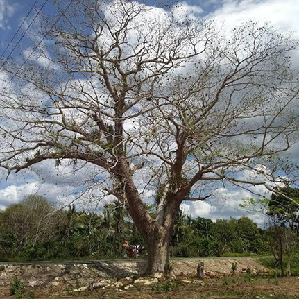

Árbol de hasta 10 mts. de altura, con follaje denso y redondeado; las flores de color lila-morado muy llamativas, florea de noviembre a enero; los frutos son vainas planas de hasta 10 cm. largo por 4 de ancho. Especie endémica de la Península de Yucatán, es usado como ornamental.
Chaka
Árbol de hasta 15 mts. de altura, con el tronco recto, escamoso y muy ramificado en la copa; las flores son pequeñas de color crema-verdoso muy aromática, florea de febrero a mayo; los frutos son cápsulas drupáceas de 1 a 1.5 cm., es una especie caducifolia.
Jabin
Árbol que alcanza hasta 20 m. de altura, caducifolio, copa densa, corteza fisurada, hojas ovadas compuestas imparipinnadas, foliolos elípticos verde oscuros, flores en panículas ligeramente perfumadas, pétalos rosados o ligeramente morados florea de febrero a mayo, frutos en forma de vaina con alas de color café y alargados quebradizos al madurar.
Pich

Árbol grande y llamativo, caducifolio, de 20 a 30 m. de altura, follaje abundante, hojas bipinnadas los foliolos se pliegan en la noche, ramas ascendentes, corteza lisa a granulosa gris clara con abundantes lenticelas alargadas; flores en pequeñas cabezuelas pedunculadas actinomórficas, caliz verde y tubular, corola verde clara, florece de marzo a mayo; el fruto es una vaina circular indehiscente de 7 a 15 cm. aplanada y enroscada leñosa, moreno oscura, brillante, de sabor dulce, contiene de 10 a 20 semillas; semillas grandes ovoides y aplanadas de color moreno, brillantes con una linea pálida con la forma del contorno de la semilla, testa muy dura.
Makulis
rbol de hasta 15 mts. de altura, el tronco es recto y fisurado y la copa piramidal; las flores son de color rosa-morado, muy vistosas, dispuestas al final de las ramas; los frutos son cápsulas de 30 a 40 cms. de largo, ligeramente retorcidos.